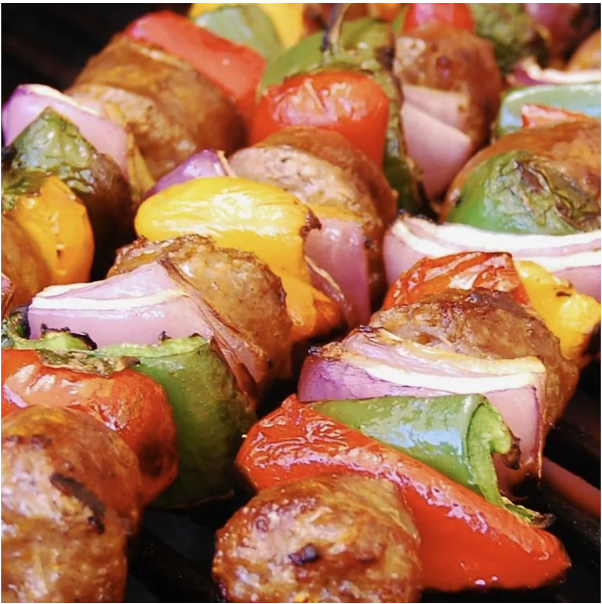

BBQ Sausage and Peppers Recipe

It's time to fire up your grill and start cooking one of the BBQ classics!
BBQ skewers require no introduction, being one of the most popular
grilling delicacy for beginner and seasoned cooks alike. But what if you
have never grilled any before? Don't worry, we've got you covered! Here's
what we'll need:
Ingredients
- 2 pounds spicy Italian sausage, sliced
- 1 large red bell pepper, cut into large chunks
- ¼ pound jalapeno peppers, cut into large pieces
- 1 large red onion, cut into chunks
- 1 (12 fluid ounce) can beer
- ½ pound sliced provolone cheese
Steps
-
Place sausage, red bell pepper, jalapeno peppers, and red onion in a
large bowl. Pour in beer. Cover, and marinate in the refrigerator at
least 1 hour.
- Preheat an outdoor grill for high heat, and lightly oil grate.
-
Alternately thread sausage, red pepper, jalapenos, and onion onto
skewers. Cook on the prepared grill until sausage is evenly brown and
vegetables are tender. Melt provolone cheese over the hot ingredients
during the last few minutes of cooking.
- Enjoy!